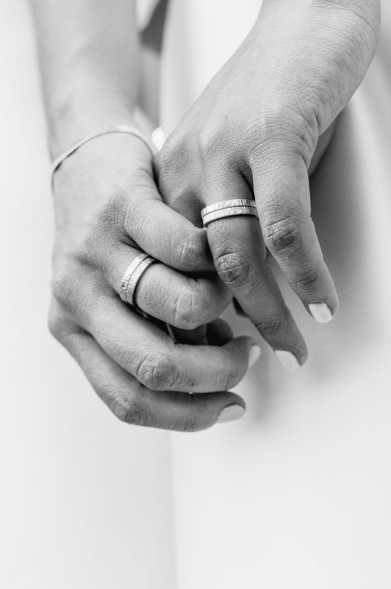
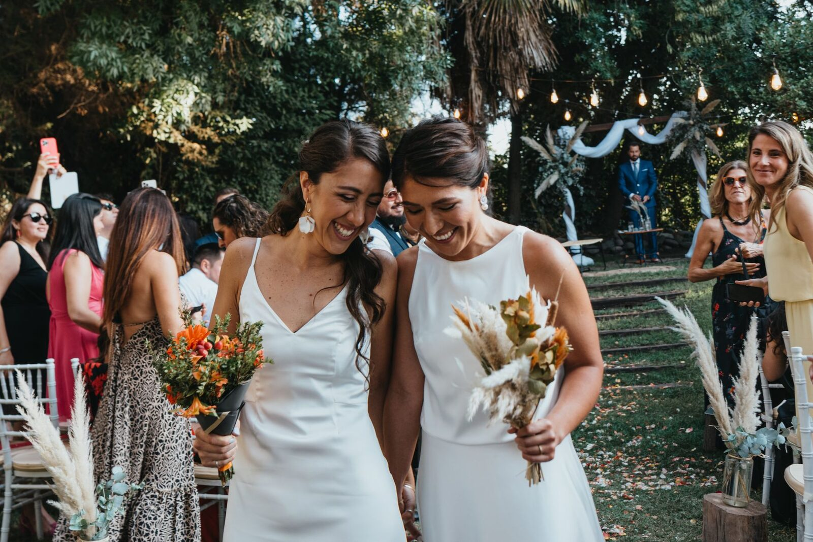
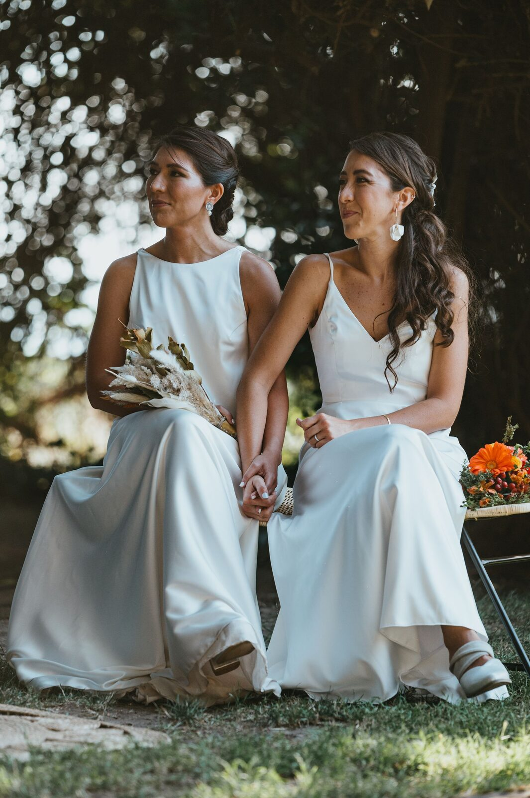
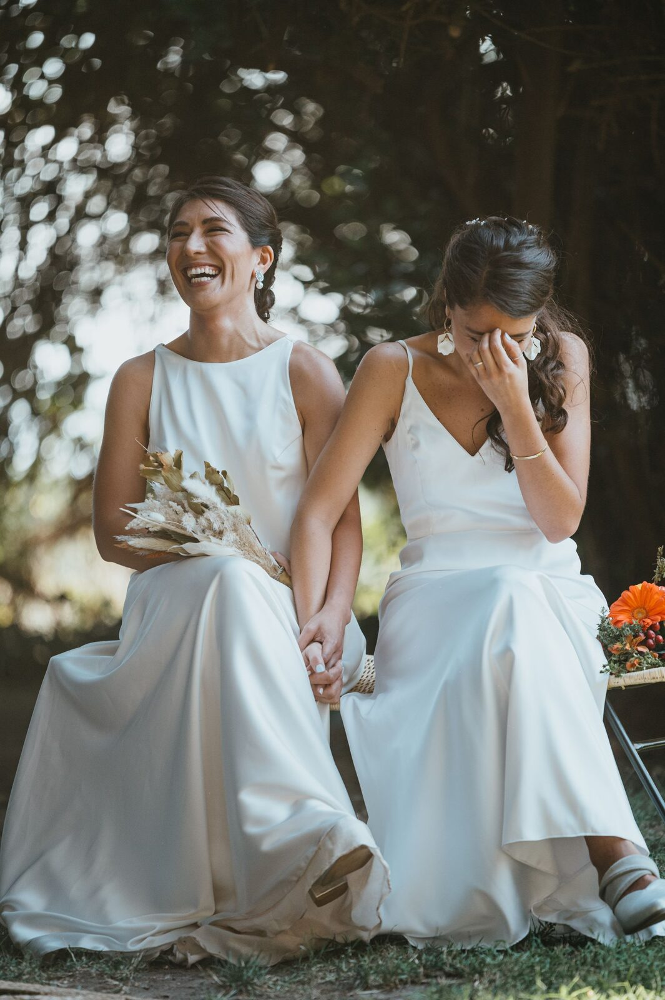
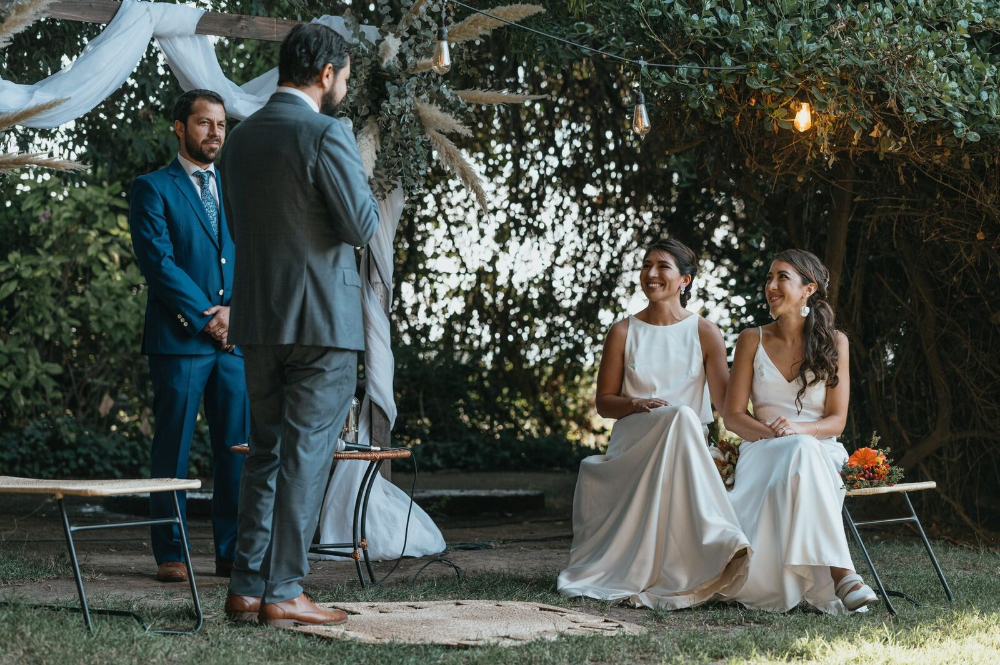
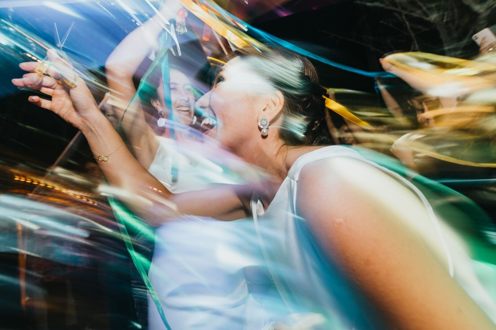
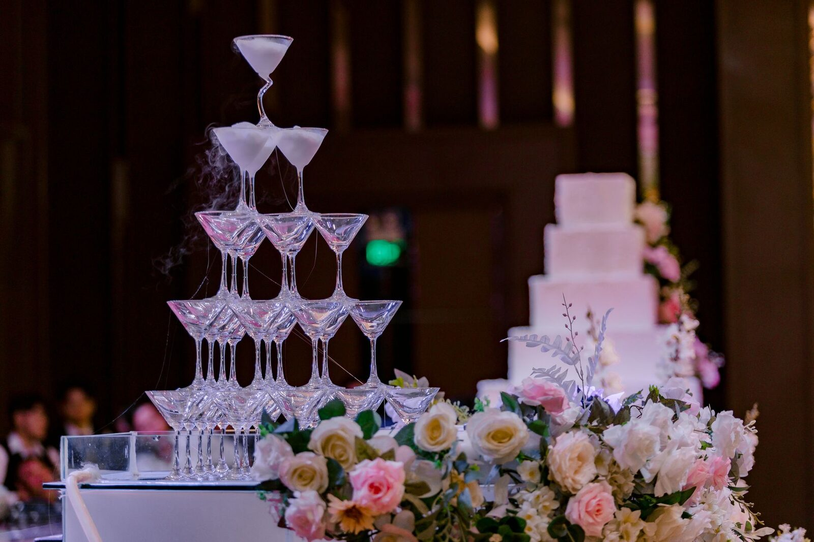

01 · MAY 2021
A borrowed umbrella
One sudden storm, one tiny coffee-shop awning, and a conversation neither of us wanted to end.
Come celebrate
APRIL 24, 2027 · CHARLESTON

How we got here

One sudden storm, one tiny coffee-shop awning, and a conversation neither of us wanted to end.

Picnic sandwiches, a blanket in the park, and six hours that somehow felt like twenty minutes.

We found the sunny apartment, adopted too many plants, and learned that home was wherever we were together.

Rose planned a garden picnic. Lena spotted the ring box immediately. We both cried anyway.

Now we get to fill one beautiful place with color, music, and every person who helped us get here.
Saturday in the garden
Find your seat, sip something bright, and settle in.
On the south lawn beneath the old oak tree.
Toasts and tiny delicious things.
Under the sailcloth tent until the stars come out.
Garden party formal
Think joyful tailoring, floaty dresses, colorful sets, and shoes happy on grass. Come elegant, comfortable, and entirely yourself.

The Garden at Wren House
Our fictional Charleston garden keeps the ceremony, cocktails, dinner, and dancing in one easy place. The lawn and reception tent are step-free from the main entrance.
48 Wren LaneWith gratitude
Kindly reply by March 12
Essentials includes a polished link to the RSVP service you already use. This demo opens our standalone RSVP example so you can see the guest handoff.
Open the external RSVP demo ↗